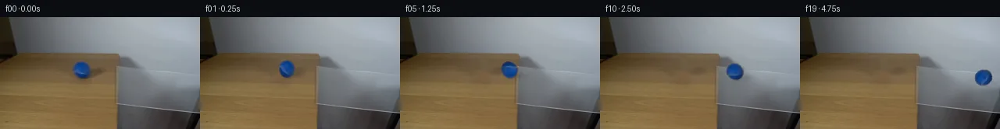

![首帧]()

Round 00
2026-11-04T21:18:27.477846+00:00像素候选变化代码 +179/−0inspection 更新
pixels 593b54de1efcfce0 · code 57b467a733e7ac9f
查看本轮 generate.py 真实 diff
--- previous/generate.py
+++ current/generate.py
@@ -0,0 +1,179 @@
+#!/usr/bin/env python3
+"""Generate the 20-frame PixelWorld continuation from the supplied RGB frame.
+
+The photographed frame is the background source. Later frames remove the
+source ball locally, then move and rotate a softly isolated copy of its real
+texture along the measured table/glass direction.
+"""
+
+from pathlib import Path
+import hashlib
+
+import cv2
+import numpy as np
+from PIL import Image, ImageDraw, ImageFilter
+
+import artifact_io
+
+
+ROOT = Path(__file__).resolve().parent
+W, H, N = 256, 144, 20
+BALL_X0, BALL_Y0 = 105.0, 68.0
+RADIUS = 11.5
+
+
+def load_source():
+ source = np.asarray(Image.open(ROOT / "first_frame.png").convert("RGB"))
+ assert source.shape == (H, W, 3) and source.dtype == np.uint8
+ return source
+
+
+def remove_source_ball(source):
+ """OpenCV local inpainting of the ball and its short original shadow."""
+ mask = np.zeros((H, W), np.uint8)
+ cv2.circle(mask, (105, 68), 14, 255, -1, lineType=cv2.LINE_AA)
+ # The measured diagonal dark run immediately to the right is the cast/contact
+ # shadow. A small polygon removes it without touching the table/glass join.
+ shadow = np.array([[111, 68], [139, 68], [137, 78], [110, 81]], np.int32)
+ cv2.fillConvexPoly(mask, shadow, 255, lineType=cv2.LINE_AA)
+ # TELEA uses only neighboring pixels from the same photographed wood region.
+ bgr = cv2.cvtColor(source, cv2.COLOR_RGB2BGR)
+ clean = cv2.inpaint(bgr, mask, 4.0, cv2.INPAINT_TELEA)
+ return cv2.cvtColor(clean, cv2.COLOR_BGR2RGB), mask
+
+
+def extract_ball(source):
+ """Return an RGBA source-ball sprite with a color/radial soft alpha."""
+ half = 15
+ x0, y0 = int(BALL_X0) - half, int(BALL_Y0) - half
+ rgb = source[y0:y0 + 2 * half + 1, x0:x0 + 2 * half + 1].copy()
+ yy, xx = np.mgrid[-half:half + 1, -half:half + 1]
+ radial = np.sqrt(xx * xx + yy * yy)
+ chroma = rgb[..., 2].astype(np.float32) - rgb[..., 0].astype(np.float32)
+
+ # Blue chroma provides the semantic cutout, radial support rejects unrelated
+ # cool wall/edge pixels, and Gaussian blur retains photographed antialiasing.
+ color_alpha = np.clip((chroma - 6.0) / 25.0, 0.0, 1.0)
+ radial_alpha = np.clip((13.0 - radial) / 1.5, 0.0, 1.0)
+ alpha = np.minimum(color_alpha, radial_alpha)
+ alpha = cv2.GaussianBlur(alpha, (0, 0), 0.45)
+ alpha[radial > 13.3] = 0.0
+ rgba = np.dstack([rgb, np.rint(alpha * 255).astype(np.uint8)])
+ return Image.fromarray(rgba, "RGBA")
+
+
+def ball_center(frame_index):
+ """Constant screen-space roll, with pane perspective after x=149."""
+ x = BALL_X0 + (236.0 - BALL_X0) * frame_index / 19.0
+ if x <= 149.0:
+ y = BALL_Y0
+ else:
+ y = BALL_Y0 + 9.0 * (x - 149.0) / (236.0 - 149.0)
+ return x, y
+
+
+def add_shadow(frame, cx, cy):
+ """Multiply a compact analytic contact/cast shadow into the substrate."""
+ yy, xx = np.mgrid[0:H, 0:W]
+ on_glass = np.clip((cx - 142.0) / 18.0, 0.0, 1.0)
+ # The broad cast shadow trails to screen-right, matching the source run.
+ broad = np.exp(-(((xx - (cx + 10.0)) / 14.0) ** 2 +
+ ((yy - (cy + 7.2)) / 4.2) ** 2) * 2.0)
+ contact = np.exp(-(((xx - cx) / 7.0) ** 2 +
+ ((yy - (cy + 10.2)) / 2.0) ** 2) * 2.0)
+ strength = (0.16 * (1.0 - on_glass) + 0.075 * on_glass) * broad + 0.12 * contact
+ # Preserve a soft transparent-glass shadow while avoiding hard synthetic rims.
+ out = frame.astype(np.float32) * (1.0 - strength[..., None])
+ return np.clip(np.rint(out), 0, 255).astype(np.uint8)
… diff truncated; 92 more lines …